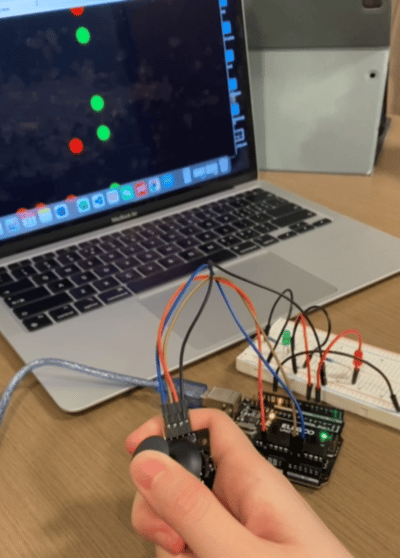

Schematic
Input Joystick: GND is connected to ground, +5V is connected to 5V power, VR_x is connected to A0, VR_y is connected to A1.
Output LEDs: The red LED is connected to Arduino pin 5, and the green LED is connected to Arduino pin 7.
Circuit
I used Ohm’s law to calculate the resistance of the resistor I should use: V=I*R. Since the voltage drop for red and green LEDs are 1.8 V, 5V-1.8V=20mA*R. Since 1A=1000mA, R=3.2V/0.02A, R=160Ω.
However, there is no 160 Ω resistor in the kit, so I chose to use the 220 Ω ones because the way to make the current to be less than 20 mA is to choose a resistor with a slightly greater resistance.
Circuit Operation
Code
P5 JS
const BAUD_RATE = 9600; // This should match the baud rate in your Arduino sketch
let port, connectBtn; // Declare global variables
function setup() { // set up the canvas
setupSerial(); // Run our serial setup function (below)
createCanvas(windowWidth, windowHeight); // Create a canvas that is the size of our browser window
background("black"); // set the background color to black
}
function draw() {
const portIsOpen = checkPort(); // Check whether the port is open (see checkPort function below)
if (!portIsOpen) return; // If the port is not open, exit the draw loop
let str = port.readUntil("\n"); // Read from the port until the newline
if (str.length == 0) return; // If we didn't read anything, return
let array1 = str.trim().split(","); // store x and y values in array1 as str
let valx = map(Number(array1[0]), 0, 1023, 0, windowWidth); // turn the x value str to a Number and map it to the window width, and store it to valx
let valy = map(Number(array1[1]), 0, 1023, 0, windowHeight); // turn the y value str to a Number and map it to the window height, and store it to valy
if (valx < windowWidth/2) { // if valx is less than half of the window width (on the left hand side of the screen)
let c = color(255, 0, 0); // set c to red RGB code
fill(c); // use red to fill shape
circle(valx, valy, 50); // draw a circle where it's located at (valx, valy) and has a diameter of 50
port.write(0); // send 0 to arduino
} else {
let c = color(0, 255, 0); // set c to green RGB code
fill(c); // use green to fill shape
circle(valx, valy, 50); // draw a circle where it's located at (valx, valy) and has a diameter of 50
port.write(1); // send 1 to arduino
}
}
// The three functions below are from the class example code.
// Three helper functions for managing the serial connection.
function setupSerial() {
port = createSerial();
// Check to see if there are any ports we have used previously
let usedPorts = usedSerialPorts();
if (usedPorts.length > 0) {
// If there are ports we've used, open the first one
port.open(usedPorts[0], BAUD_RATE);
}
// create a connect button
connectBtn = createButton("Connect to Arduino");
connectBtn.position(5, 5); // Position the button in the top left of the screen.
connectBtn.mouseClicked(onConnectButtonClicked); // When the button is clicked, run the onConnectButtonClicked function
}
function checkPort() {
if (!port.opened()) {
// If the port is not open, change button text
connectBtn.html("Connect to Arduino");
// Set background to gray
background("gray");
return false;
} else {
// Otherwise we are connected
connectBtn.html("Disconnect");
return true;
}
}
function onConnectButtonClicked() {
// When the connect button is clicked
if (!port.opened()) {
// If the port is not opened, we open it
port.open(BAUD_RATE);
} else {
// Otherwise, we close it!
port.close();
}
}
Arduino Code
int x = A0; // declare int variable x and set it equal to A0
int y = A1; // declare int variable y and set it equal to A1
int xval = 0; // delare int xval and set it to 0
int yval = 0; // delare int xval and set it to 0
void setup() { // set up for serial communication and initialize pins
Serial.begin(9600); // initialize serial communication
Serial.setTimeout(10); // set the timeout for parseInt
pinMode(5, OUTPUT); // set pin 5 as OUTPUT
pinMode(7, OUTPUT); // set pin 7 as OUTPUT
}
void loop() { // print the joystick x and y values to serial monitor, turn on and off the red LED if the serial data received is 0, turn on and off the green LED if the serial data received is 1
xval = analogRead(x); // set xval equal to joystick x value
xval = analogRead(x); // set xval equal to joystick x value
yval = analogRead(y); // set yval equal to joystick y value
Serial.print(xval); // print xval to serial monitor
Serial.print(","); // print "," to serial monitor
Serial.println(yval); // print yval to serial monitor and go to next line
delay (100); // wait for 100 ms
if (Serial.available() > 0) { // if there's serial data
int inByte = Serial.read(); // set int inByte to the serial data
if (inByte == 0) { // if int inByte is equal to 0
digitalWrite(5, HIGH); // turn on red LED
delay(50); // wait for 50 ms
digitalWrite(5, LOW); // turn off the red LED
}
if (inByte == 1) { // if int inByte is equal to 1
digitalWrite(7, HIGH); // turn on the green LED
delay(50); // wait for 50 ms
digitalWrite(7, LOW); // turn off the green LED
}
}
}